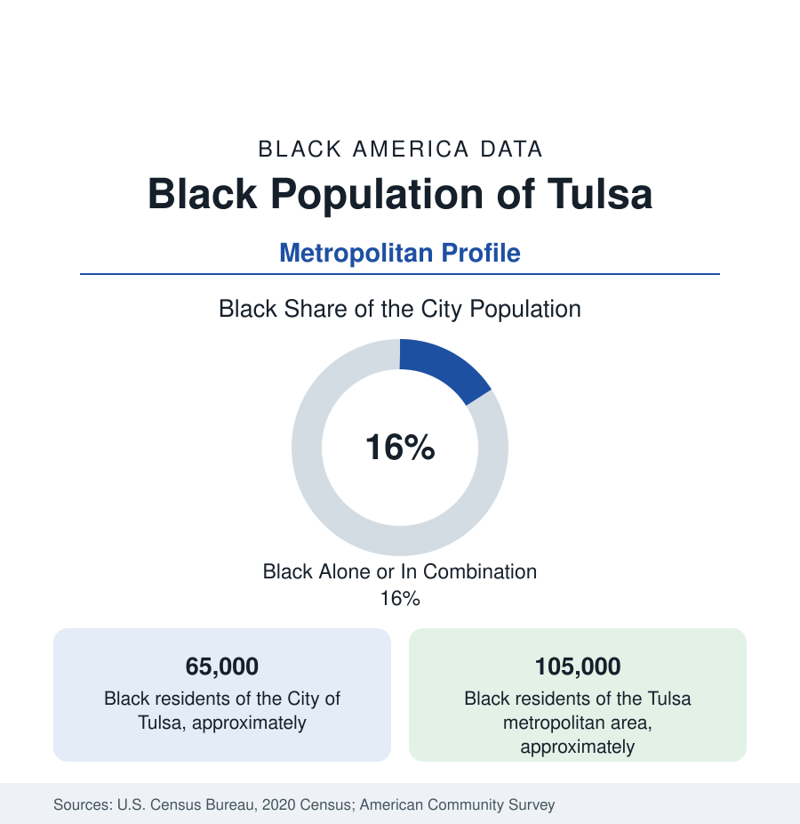

Black Cities
Black Tulsa: Greenwood's Ground and North Tulsa's Present
Tulsa holds about 65,000 Black residents in the city and 105,000 across the metro — on the most famous thirty-five blocks in Black economic history. The census profile.

Tulsa holds about 65,000 Black residents within the city — Black alone or in combination, roughly a sixth of its 413,000 people — and about 105,000 across the metropolitan area. No Black community in America lives atop more famous ground: Greenwood, the oil-boom district whose prosperity earned it the name Black Wall Street and whose destruction in the 1921 massacre is the most documented episode of anti-Black violence in the national record. The modern profile is written, inescapably, in that ground's long aftermath.
Greenwood: The District and Its Destruction
The historical data frame the loss in numbers the reference can state plainly. By 1921 Greenwood held some ten thousand residents and hundreds of Black businesses — banks, hotels, theaters, professional offices, the Dreamland Theatre, two newspapers, the district built by the oil boom's spillover and the Black-town movement's energy (O.W. Gurley and J.B. Stradford its emblematic builders). The massacre of 1921 destroyed some thirty-five blocks — over a thousand homes and businesses burned or looted, deaths estimated from the dozens to the hundreds in the 2001 state commission's accounting, thousands interned, no one prosecuted, insurance claims denied on riot exclusions. Greenwood rebuilt within the decade — remarkably, the district's business count recovered by the 1940s to a second peak — and then met the slower second destruction of the clearance era: urban renewal and the I-244 expressway's cut through the district's heart in the 1960s–70s, dispersing the rebuilt Greenwood as thoroughly as the fire had the first. The modern Greenwood is a heritage district of a few blocks — the Greenwood Rising museum (opened 2021 for the centennial), the preserved Vernon AME basement, markers and murals — inside a downtown boom that prices the ground at values the community that made it famous largely does not own.
North Tulsa: The Modern Community
Black Tulsa lives north: the districts beyond Admiral and along the North Peoria and Cincinnati corridors, the Turley and Dawson layers, the subdivisions of the far north — a broad quadrant whose data carry the Greenwood file's contemporary form. The indicators are the section's most cited local disparity set: the life-expectancy gap between north and south Tulsa ZIP codes has been measured in the local health data at more than a decade (in some tract comparisons, approaching fourteen years), the grocery and retail geography thinned to the 'food desert' archetype after the corridor supermarkets' closures and partial return, and the school data (Tulsa Public Schools' Booker T. Washington High — Greenwood's school, now a celebrated magnet — against the north elementaries' struggles) trace the educational map. Langston University's Tulsa campus and Tulsa Community College's northeast campus serve the district; Oral Roberts University sits in the city's south, a different Tulsa entirely.
The Reparations File and the Centennial Economy
Tulsa's is the American reparations debate's evidentiary center, and the reference reports its data state: the 2001 Oklahoma commission's recommendations, the survivors' litigation (dismissed on limitations grounds through the 2020s appeals), the last survivors' deaths in the mid-2020s closing the direct-witness era, and the city's own programs (the Greenwood legacy initiatives, the housing and scholarship funds debated in the council data) as the municipal layer. The centennial of 2021 industrialized the memory: Greenwood Rising's attendance, the heritage-tourism economy's growth, and a national curriculum presence that makes Tulsa's thirty-five blocks the most taught local history in the country. The ownership question the centennial raised in data form — who owns Greenwood now — is answered in the parcel records: predominantly not the descendants, a fact the local reporting quantifies block by block.
Change and the Estimates
The estimates show a growing metro whose Black population grows slowly and suburbanizes (Owasso and Broken Arrow's increments, Jenks' professional layer), while north Tulsa holds its population against the out-flow — the district's churches and institutions (the northside congregations, the Juneteenth festival's scale) anchoring a community whose civic energy runs far ahead of its indicator tables. The Cherokee and Muscogee nations' Tulsa presence (the city sits across tribal jurisdictions, restored in the McGirt era's legal geography) adds the profile's distinctive layer: Black Freedmen citizenship in the tribal nations — a legal-demographic file unique to Oklahoma — intersects the census counts in ways the tribal and federal data negotiate case by case.
Reading the Tulsa Numbers
Tulsa is where this reference's abstractions — wealth destroyed, ground lost, institutions rebuilt — have street addresses. The 105,000 Black residents of the metro tables are the heirs of the most documented Black economy in American history and of its most documented destruction; the data's task, which the local community performs annually in public, is to hold both ledgers open at once.
More in Black Cities
Black Atlanta: Population, Distribution, and Growth of a Black Metropolis
Metro Atlanta holds more than two million Black residents — roughly one in three, second only to New York. The suburban distribution, migration history, and composition of Black Atlanta in the census data.
Black New York: The Largest Black Population in America
The New York metropolitan area holds about 3.4 million Black residents — more than any metro in the nation — and the city itself about two million. The census profile.
Black Washington: The District and the Metro
The Washington metro holds about 1.6 million Black residents, and the District itself — long a majority-Black city — now records a Black share near 41 percent. The census profile.
Source: U.S. Census Bureau, 2020 Census; American Community Survey; Population Estimates Program.